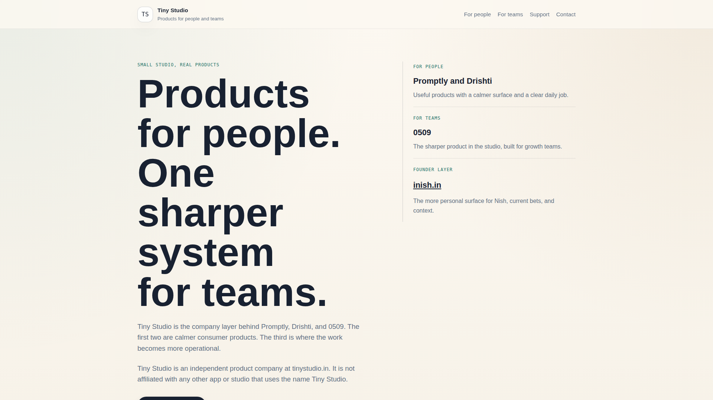
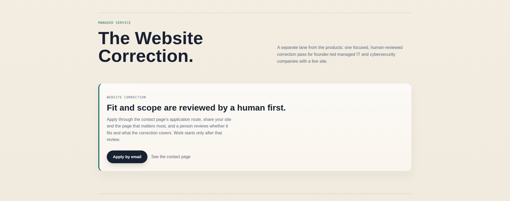

A human-reviewed fix for the one page on your site that matters most.
For founder-led Managed IT, MSP and cybersecurity companies with a live site.

Tiny Studio is an independent product company at tinystudio.in.Live site, captured 2026-10-12. Alongside its products it offers one human-reviewed managed service.
One page. One fixed scope.
What every sprint includes
Fault map
Rewrite or redesign of the page
Implementation pass or dev-ready handoff
Search-trust basics
Before/after proof
Loom walkthrough
Measurement plan
One revision
14-day implementation tracking
Human review
A person decides fit, claims, client-facing work, delivery and renewal.
Automation prepares research, drafts, QA and packages. It cannot send, publish, spend, approve, accept or renew on its own.
When the clock starts
Day 0 starts only when four things are in place.
Payment
Required context
An approval owner
An implementation owner
Client delay pauses the clock.
Founder pilot
$1,000
Fixed price for the first 3 clients.
No guarantee of revenue, rankings, ROAS, conversion, booked calls or sales volume.

Send your site and the page that matters most.
A person reviews fit and scope first. Work starts only after that review.
Apply: support@tinystudio.in
Music: “Inspired” by Kevin MacLeod (incompetech.com), licensed CC BY 4.0.